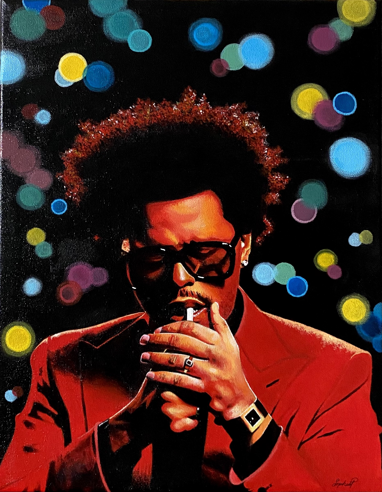
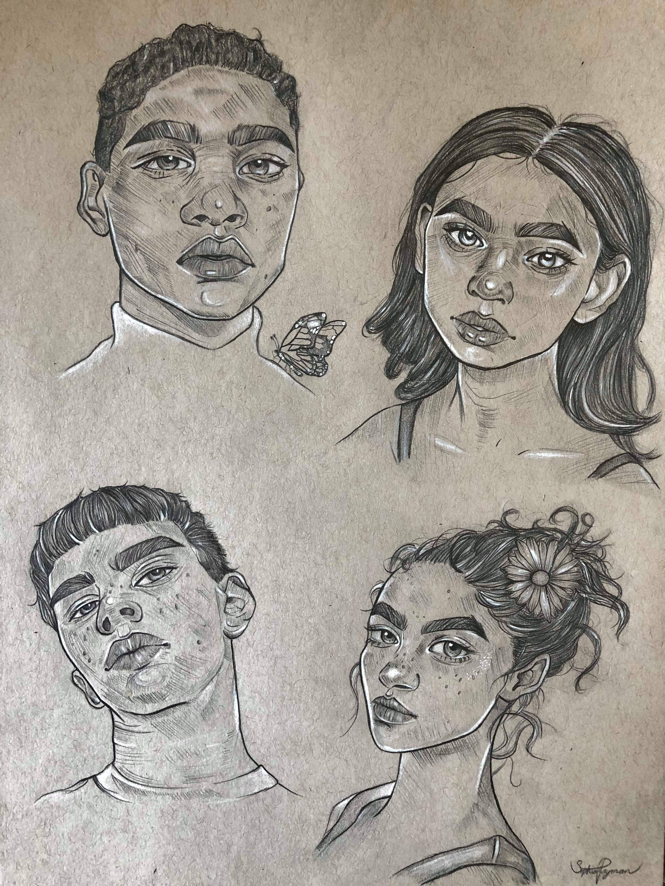
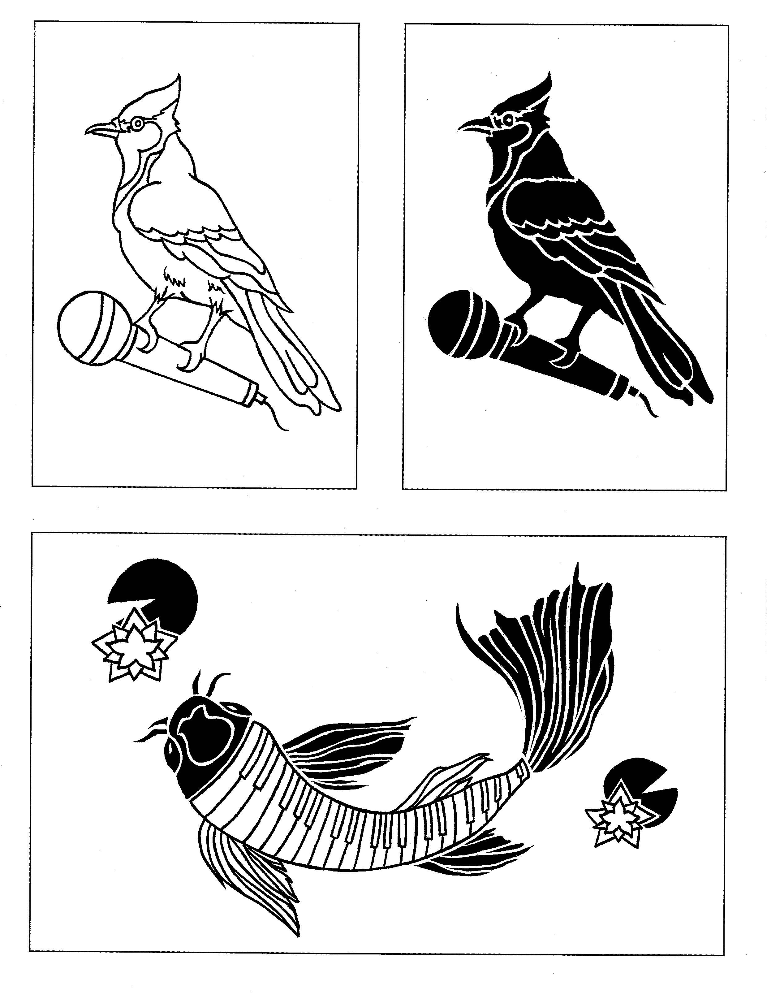
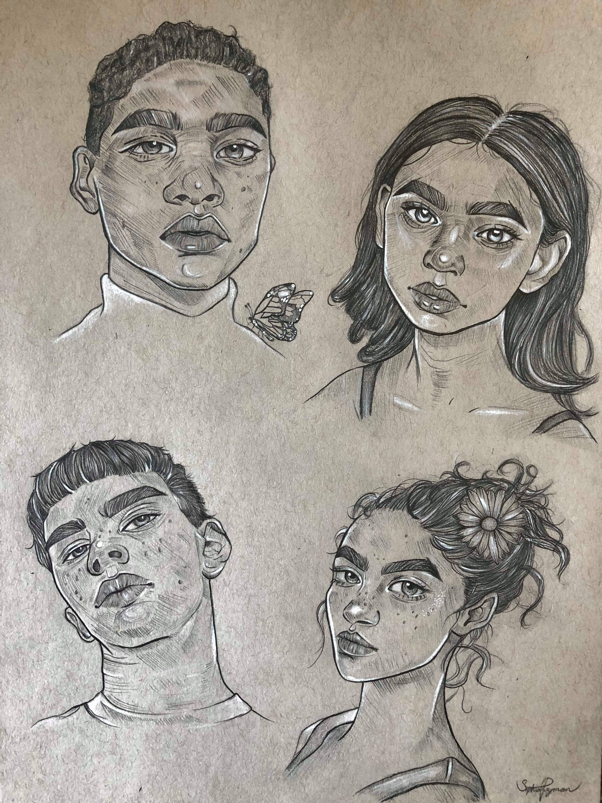
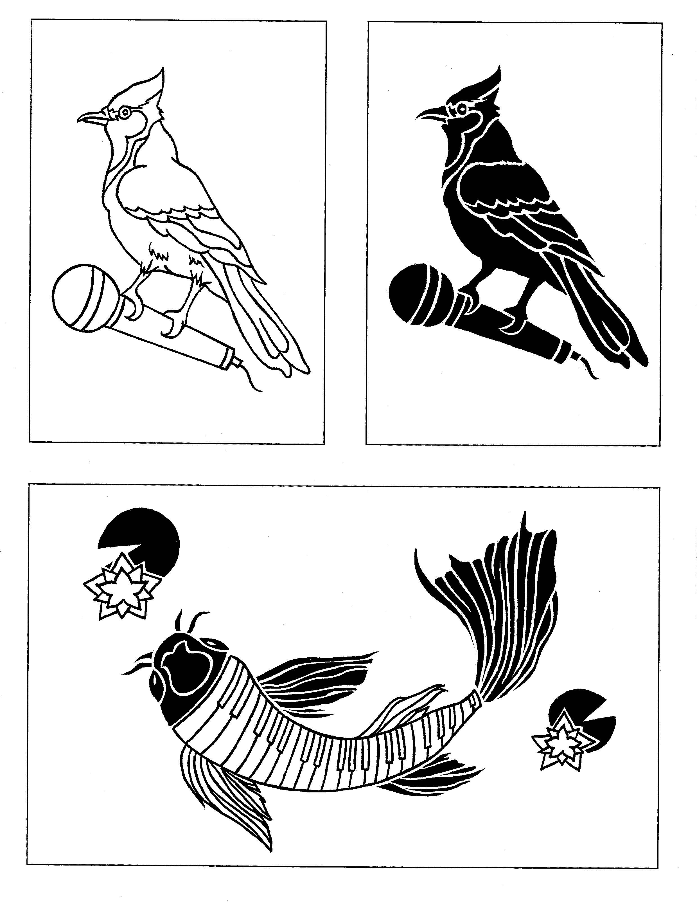
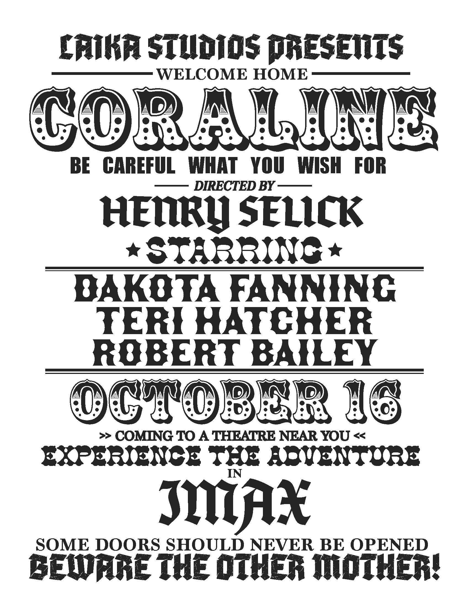
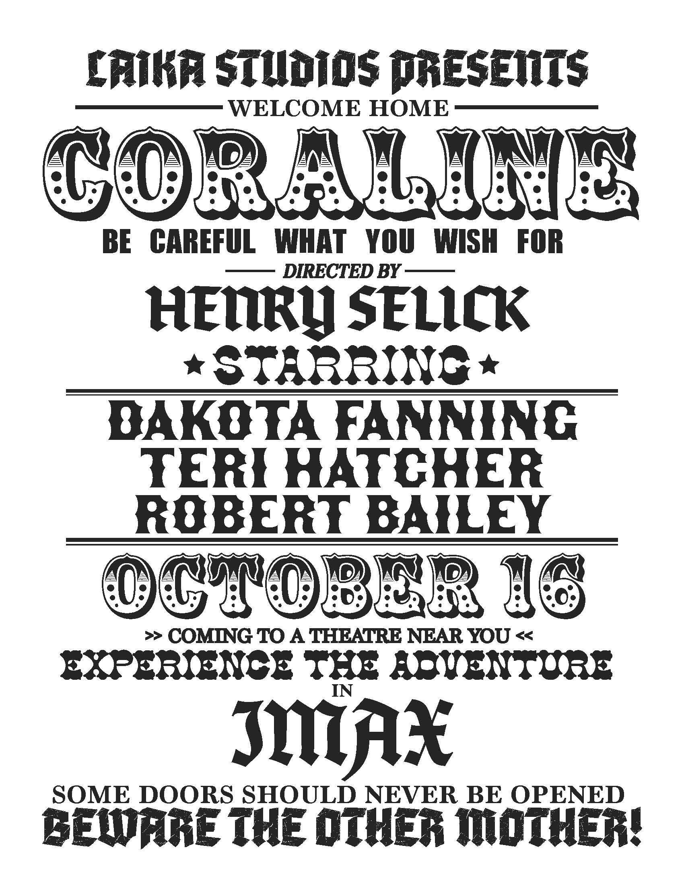
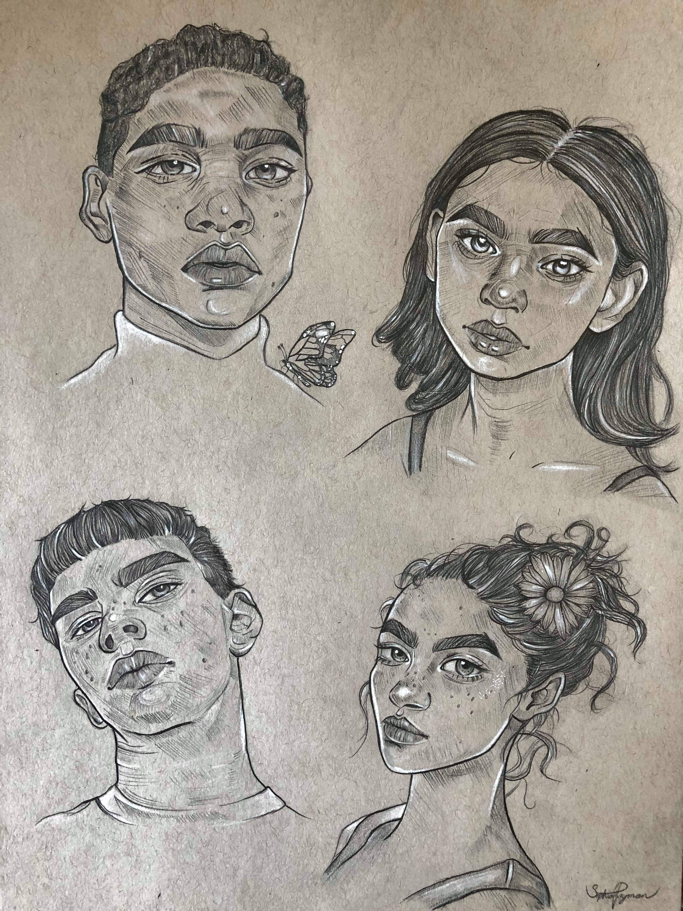
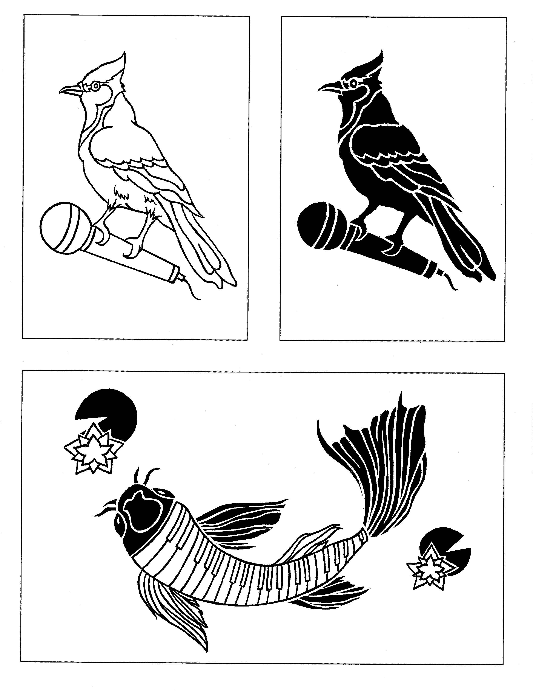
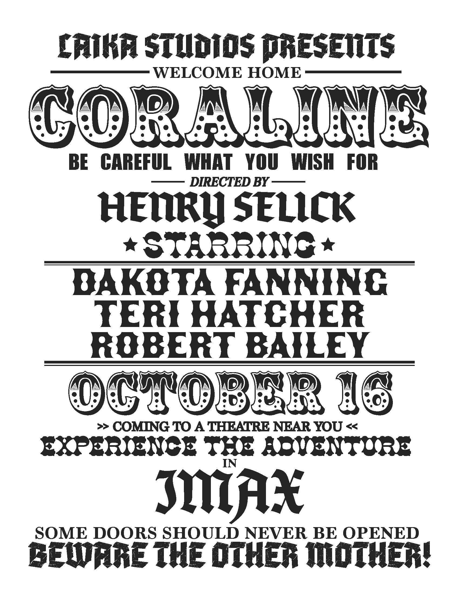

A little about me
Hello, my name is Sophia and I'm a second year Graphic Design student. I've loved making art since a very young age and my interest for design sparked in highschool. My favourite things to do during my free time are painting, reading, and baking.
Goals in Graphic Design
So far, I've been really enjoying typography and logo design and I look forward to learning motion graphics. I hope to work for a local design studio or the government after finishing my studies.
My Work

 



 



